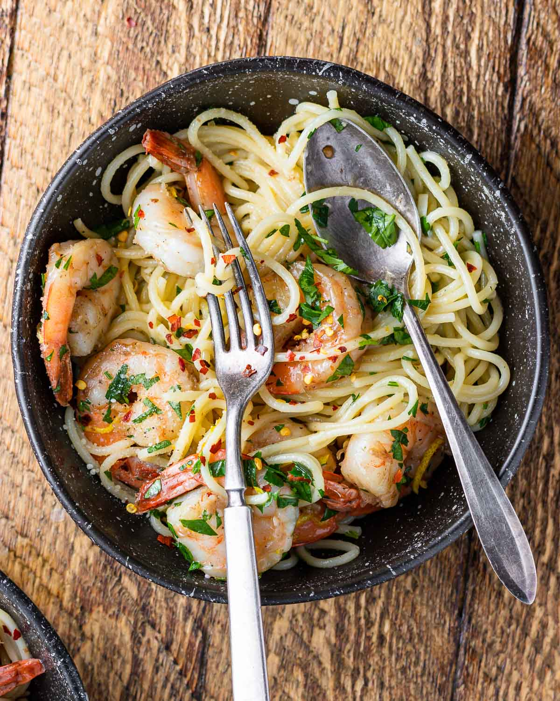

Lemon Garlic Shrimp Pasta

Experience a burst of freshness with this zesty Lemon Garlic Shrimp Pasta. Quick to prepare, this dish combines succulent shrimp, al dente pasta, and a vibrant lemon-garlic sauce for a delightful dining experience.
Indulge in the tantalizing flavors of Lemon Garlic Shrimp Pasta. This easy recipe brings together juicy shrimp, perfectly cooked pasta, and a zesty lemon-garlic sauce that will awaken your taste buds. Whether you're a seafood lover or just looking for a refreshing dish, this pasta is a quick and flavorful option for any occasion.
Ingredients
- 1 pound large shrimp, peeled and deveined
- 8 ounces linguine pasta
- 3 tablespoons olive oil
- 4 cloves garlic, minced
- 1/2 cup chicken broth
- Juice of 2 lemons
- Zest of 1 lemon
- 2 tablespoons chopped fresh parsley
- Salt and pepper to taste
- Grated Parmesan cheese for serving
Steps
- Cook the linguine according to package instructions; drain and set aside.
- In a large skillet, heat olive oil over medium heat. Add minced garlic and sauté until fragrant.
- Add the shrimp to the skillet and cook until pink and opaque.
- Pour in the chicken broth, lemon juice, and lemon zest. Simmer for a couple of minutes.
- Toss the cooked linguine into the skillet, coating it with the lemon-garlic sauce.
- Sprinkle with chopped parsley, season with salt and pepper, and serve with grated Parmesan cheese.